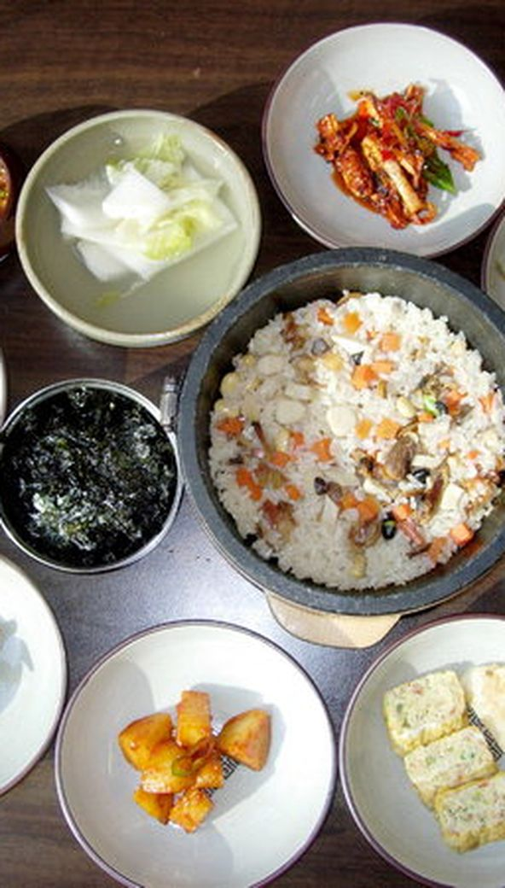
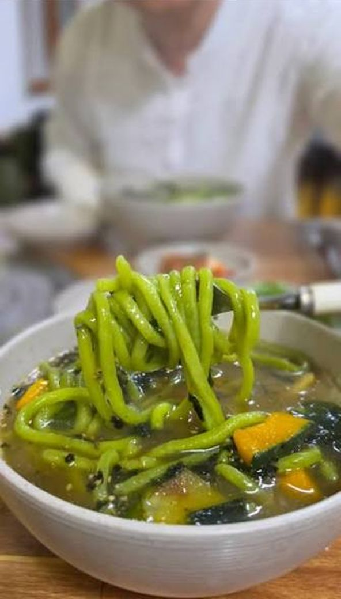
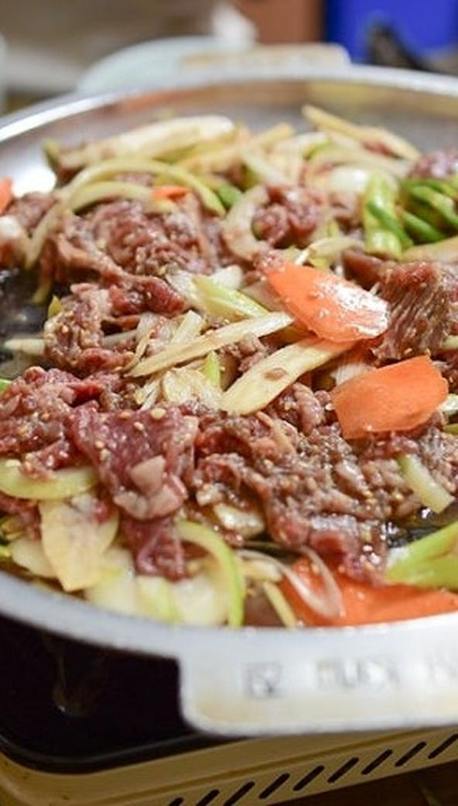
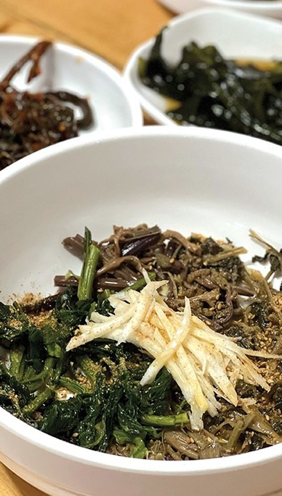
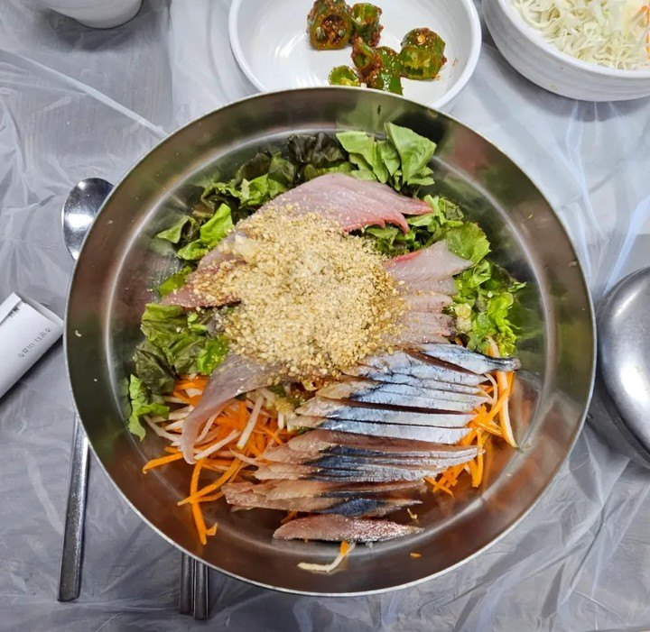
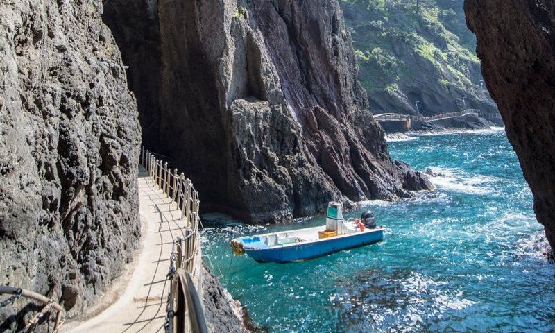

여행자 리뷰 기준 실시간 인기 랭킹이에요

1
2
3
4
5
6여기서만 맛볼 수 있는 섬의 맛이에요
자연산 홍합을 듬뿍 넣어 지은 밥에 간장 양념을 슥슥.
따개비 육수의 시원한 감칠맛. 뱃길에 지친 속을 달래는 한 그릇.
산나물 먹고 자란 울릉 약소. 부드럽고 향이 좋아요.
명이·부지깽이·삼나물이 한가득. 나리분지가 본고장.
울릉 근해 오징어로 만드는 여름 별미와 얼큰한 해장.
울릉 호박으로 만든 달큰한 간식과 술 한잔.
향토 음식 5곳 도장을 모으면 특산물 할인 쿠폰을 드려요
도동·저동 시가지 특산품 상점과 항구 건어물 가게에서 살 수 있어요
맑은 동해에서 잡아 그날 손질 · 선물용 인기 1위
울릉이 원조 · 고기와 최고의 궁합
울릉 산나물 삼총사 · 나물 반찬의 주인공
달콤한 명물 간식 · 호박막걸리와 세트 추천
산나물 먹고 자란 소 · 정육 선물세트
해풍 맞은 돌미역과 더덕 · 건강 선물로 인기